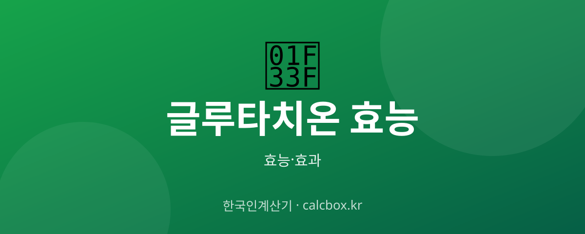

글루타치온 효능 — 미백·항산화에 좋은 이유와 섭취법·주의점
'백옥주사'로 유명한 글루타치온. 항산화의 대표 성분이 피부와 건강에 어떤 도움을 주는지, 먹는 제품은 효과가 있는지 정리했습니다.

글루타치온 개요 — 어떤 것인가요?
글루타치온은 우리 몸에서 만들어지는 대표적 항산화 물질로, 세 가지 아미노산으로 이뤄진 트라이펩타이드입니다. 나이가 들수록 체내 생성량이 줄어 보충에 관심이 높아졌습니다.
글루타치온 주요 효능·효과
- 강력한 항산화 — 활성산소를 중화해 세포 산화 스트레스를 줄이는 우리 몸의 핵심 항산화제입니다.
- 피부 톤 개선 — 멜라닌 생성 경로에 관여해 피부 미백·톤 개선 목적으로 활용됩니다.
- 해독 보조 — 간의 해독 과정에서 중요한 역할을 하는 것으로 알려져 있습니다.
섭취·사용 방법과 권장량
먹는 글루타치온은 위에서 분해되기 쉬워 흡수율 논란이 있습니다. 그래서 리포좀·환원형(GSH) 제형이나 비타민C와 함께 섭취하는 방법이 쓰입니다. 하루 250~500mg 수준 제품이 많습니다.
주의사항·부작용
주사제(정맥 투여)는 반드시 의료기관에서만 시행해야 하며 자가 주사는 위험합니다. 미백 효과는 개인차가 크고 즉각적이지 않습니다. 임산부·수유부·질환자는 사전에 의사와 상담하세요.
자주 묻는 질문 (FAQ)
Q. 먹는 글루타치온도 효과가 있나요?
위장에서 분해되는 문제로 흡수율 논란이 있지만, 환원형·리포좀 제형과 비타민C 병용으로 흡수를 높이려는 제품이 많습니다. 효과는 개인차가 크므로 과한 기대는 금물입니다.
Q. 글루타치온과 비타민C를 같이 먹으면 좋나요?
비타민C는 글루타치온을 환원형으로 재생시키는 데 도움을 준다고 알려져 함께 섭취하는 경우가 많습니다.
Q. 피부가 하얘지는 데 얼마나 걸리나요?
즉각적이지 않으며 수 주~수 개월 꾸준한 섭취와 자외선 차단이 함께 필요합니다. 효과와 속도는 개인차가 큽니다.